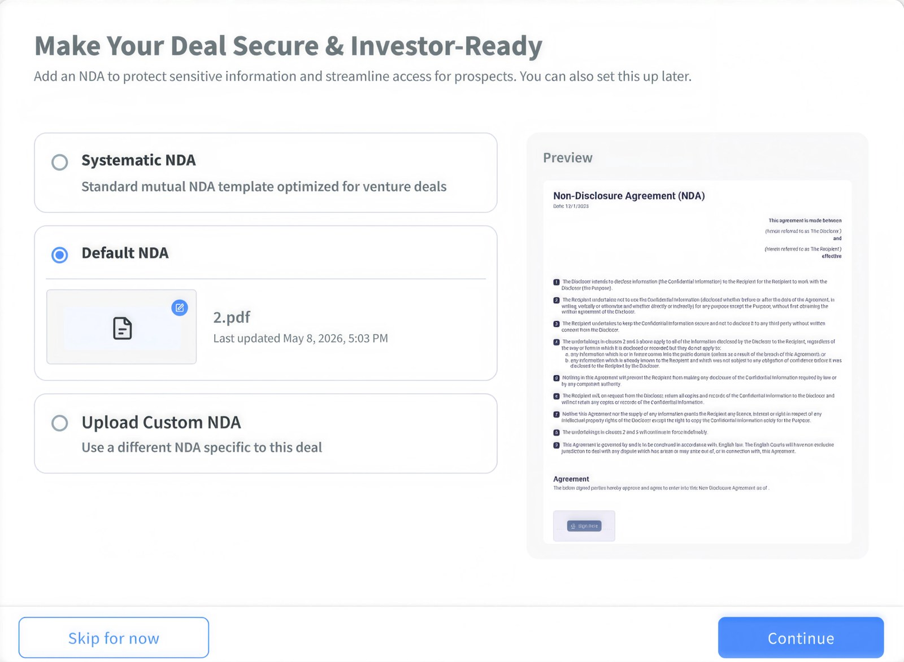
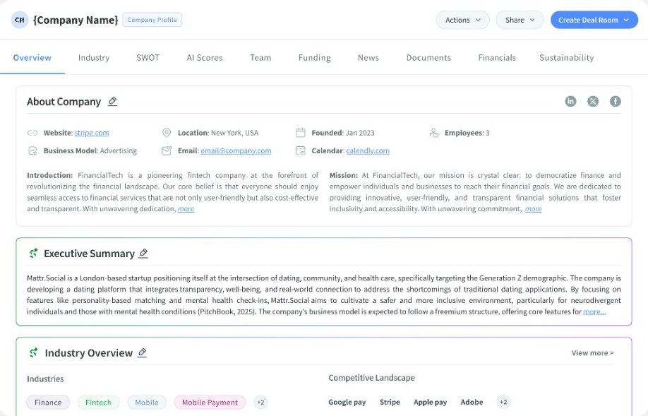
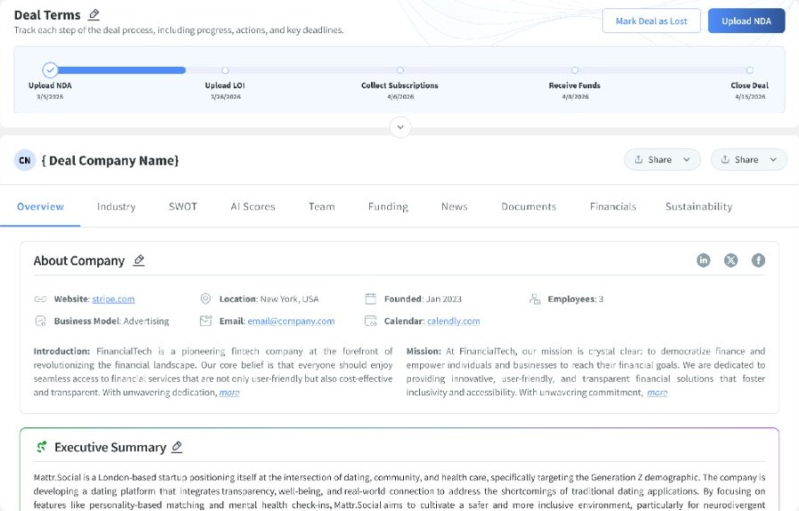
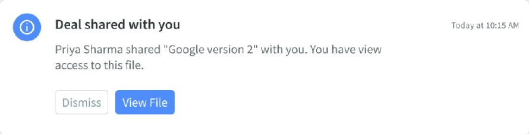

Founder or deal creator
Needs a clear next action under pressure.
- Repeats the same context on every call
- Can't see who viewed, signed or downloaded
- Follow-ups stay manual
A guided path
from interest
to commitment
Founders and investors on Systematic were already talking. The paperwork lived somewhere else. I moved deal creation onto the company profile and put the NDA inside the product. Deal creation went up 32%.

4
places for one deal: Systematic, Drive, email and WhatsApp
6
steps from profile to decision: profile, email, financials, NDA, calls, decision
4
questions nobody could answer: who viewed, signed, downloaded, or showed interest

6 or 7 calls
Founders and investors
Working sessions with the PM
When I want to check out a company, I still have to sign an NDA somewhere else before I can even see the documents.Hisham Kissim, venture capitalist
If someone wants me to sign an NDA, I usually end up doing it on a completely different platform.Peter Marchioni, investor partner
We were losing people right at deal creation. Get them past that step, and tracking becomes the real value.Partha Panwala, product manager, Systematic
Not a polished research program. Calls and working sessions until the same frictions stopped surprising us. People didn't stall because a feature was missing. They stalled when the next step was unclear.
Needs a clear next action under pressure.
Builds trust through gates they can see.
Watches where people drop off.
01
Create from the profile. Company context rides along.
02
A gate inside the product. Not an attachment waiting in someone's inbox.
03
Docs, access and interest in the same flow. Still some unfinished edges.
That's where people already open the tab. A separate deal dashboard felt clean in sketches and wrong in practice.
Hisham and Peter named the tool switch without prompting. We held that line, even when legal wanted more ceremony.
Same company, many deals. Access is messy, so owners can share, grant and revoke anytime.
NDA options
3
Systematic template, custom upload, or a saved one reused across deals. Default was fastest. Custom was the one legal used.
Gates
3
Setup, NDA, commitments, in a visible order. People still skipped steps when they could.
Paths
2
Host and investor. Two flows on the same deal object.




01
Create Deal Room on the company profile. One less place to hunt.
02
Setup, then NDA, then commitments. A visible order, not hidden states.
03
Sign in the deal path. Access unlocks after. Some still asked for a PDF copy.
04
Viewed, signed, downloaded, interest, per person. Grant or revoke anytime.




Each feature went from a problem and a guess, through wireframes and feedback, to final UI. Some of what shipped early got cut.
People never reached the structured flow. My guess: a button on the profile would lift adoption without adding steps.
Changed: dropped the separate nav entry. Creation moved onto the profile.
Trust wore down right at the gate.
Changed: a multi-step legal maze became four in-context screens, with a preview before signing.
Founders couldn't see who viewed, signed or downloaded.
Changed: readiness signals and role-based views replaced static status lists.
We shipped some of that early. It looked busy and told nobody what to do.
Changed: cut it. Status had to answer "what do I do next?"
+32%
deal creation, after entry moved onto the company profile.
−27%
friction from finding a deal to acting on it.
Fewer
stuck deals, and far less manual follow-up.
We could see the stall now. Fixing it is a different project.
Owners still chased some people. Less blind chasing.
Signing in the deal path worked. A few investors asked for a copy afterward anyway.